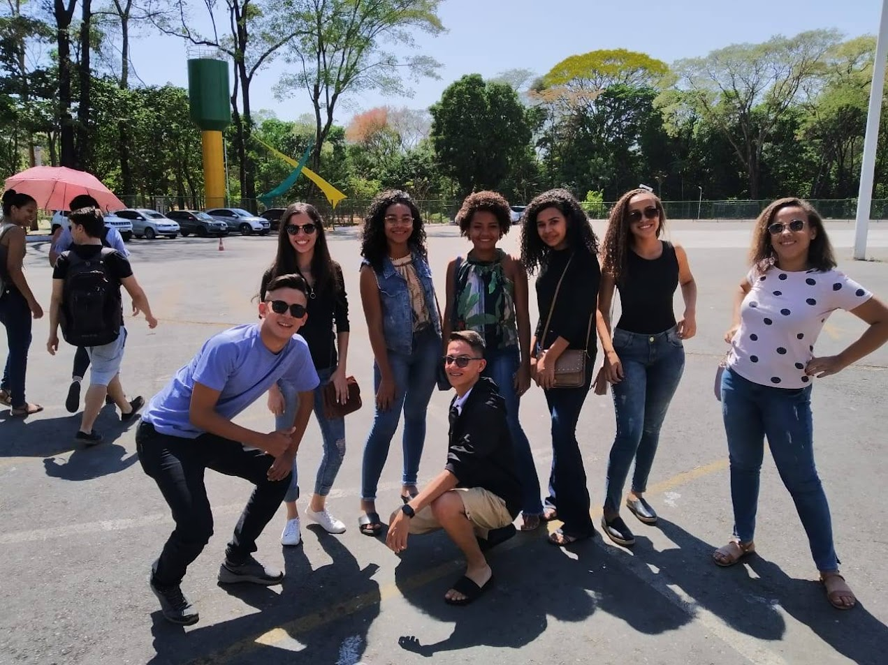
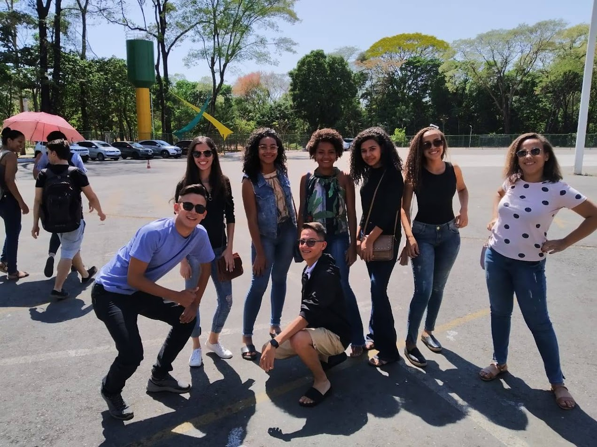

Bruno
Se tem uma amizade que o tempo e a distância nunca conseguiram enfraquecer, é a nossa.
Desde a infância, crescemos lado a lado — unidos pela amizade e pelas canções na igreja.
Mesmo quando a vida nos levou para cidades diferentes, o laço permaneceu firme, como se nunca tivesse havido distância.
Brincalhão, sempre com uma piada pronta e um sorriso no rosto, ele é aquele tipo de amigo que você chama pra tudo — e ele topa!
Sempre que nos encontramos, é como se o tempo não tivesse passado. A conexão é imediata, a risada é fácil e o carinho é o mesmo de sempre.
Ele é aquele tipo de amigo raro: presente mesmo longe, verdadeiro mesmo no silêncio, essencial mesmo na correria da vida.
Ser amigo dele é ter certeza de que a infância deixou mais do que memórias — deixou um irmão de alma.
Momentos com Bruno 📸

 
